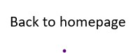

There are many bullying happened in school every year. A 2012 study of California middle and high school students published in the American Journal of Public Health found that 75 percent of all bullying originated from some type of bias against a person’s race, sexual orientation, religion, disability or other personal characteristic.(Phillips 1 )
People often talk about bullying in general terms. But as Anneliese Singh, a professor of counseling and associate dean for the Office of Diversity, Equity and Inclusion at the University of Georgia, points out, “If you look more closely at ‘general bullying,’ what you’ll see is a lot of bias-based bullying.”(Phillips 1)
Some students will also let other students keep away from you because you are different from other, maybe it is because your have the different race or sexual orientation. These will cause you have no friend in the school and you will feel lonely by these things. You can have a imagine, if one day, almost all of the students at the school keep away from you and have no talking with you, maybe they will make some tricks to you and make you feel unhappy and angry.
Some students may think you are different and make them feel bad, then, they may threaten you to change a school and don't appear in the place they can see anymore or they may threaten you to give them money because you are different.
